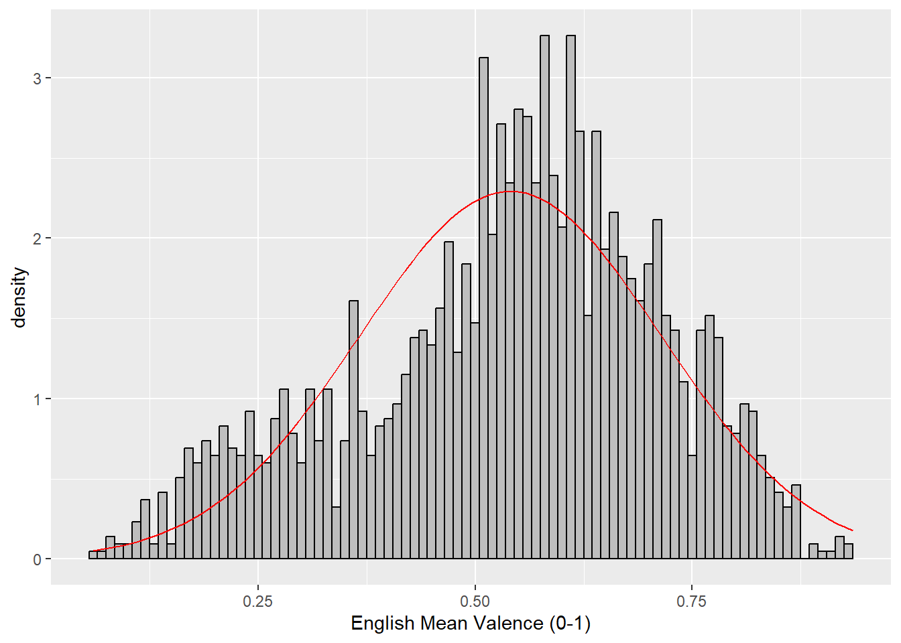
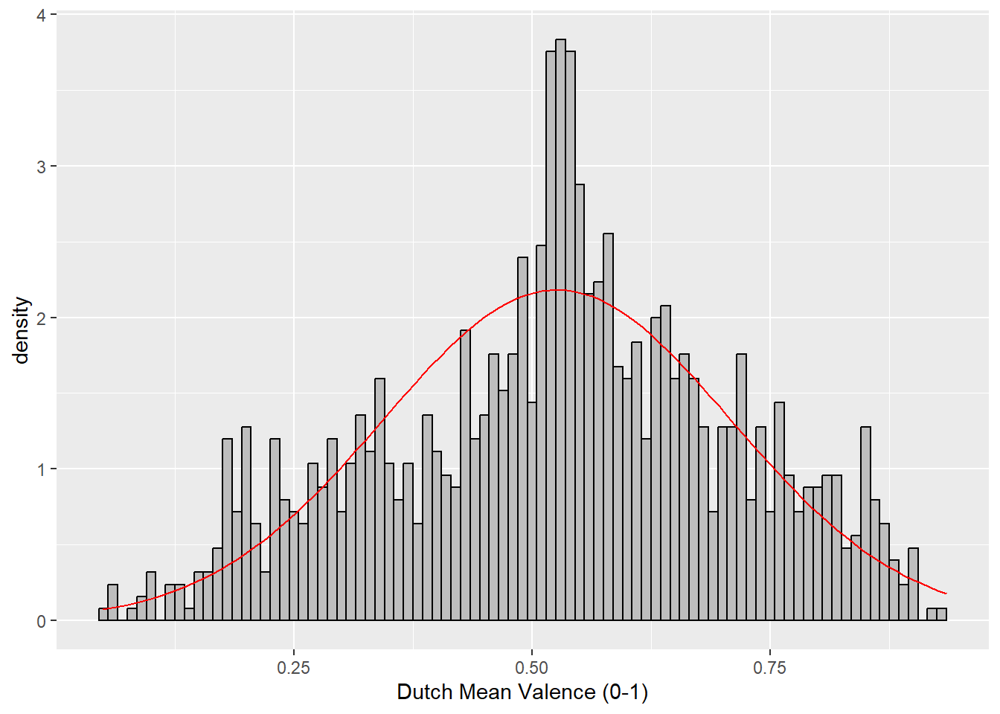
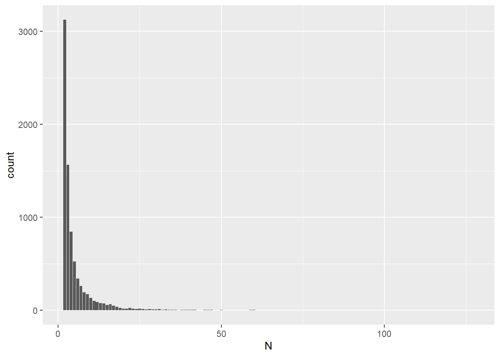
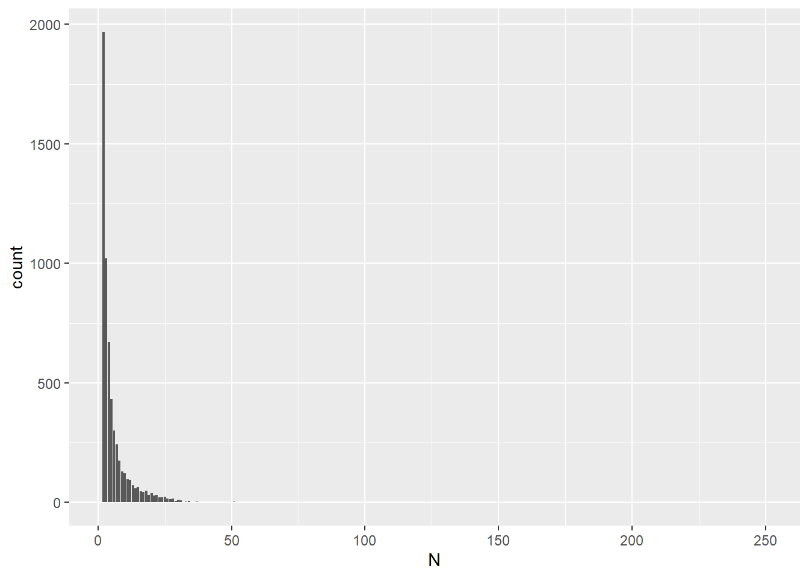

Chapter 2 Set-up and Data preparation
2.2 Prepare GECO Material
GECO Materials are downloaded from (Cop et al., 2017) https://expsy.ugent.be/downloads/geco/
EnglishMaterial_raw <- read_excel("EnglishMaterial.xlsx")
DutchMaterial_raw <- read_excel("DutchMaterials.xlsx")I created Material tibbles (EnglishMaterial & DutchMaterial) by only selecting necessary columns (Language, WORD_ID, WORD, PART_OF_SPEECH, CONTENT_WORD, WORD_LENGTH) and only content words.
EnglishMaterial <- EnglishMaterial_raw %>%
mutate(Language = "English") %>%
select(Language, WORD_ID, WORD, PART_OF_SPEECH, CONTENT_WORD, WORD_LENGTH) %>%
filter(CONTENT_WORD == "1") %>%
unique()
DutchMaterial <- DutchMaterial_raw %>%
mutate(Language = "Dutch",
WORD_ID = IA_ID) %>%
select(Language, WORD_ID, WORD, PART_OF_SPEECH, CONTENT_WORD, WORD_LENGTH) %>%
filter(CONTENT_WORD == "1") %>%
unique()2.3 Prepare Valence dataset
Valence rating datasets are downloaded from http://crr.ugent.be/programs-data/word-ratings. Because two valence datasets use different rating metrics, I transformed valence ratings (V_Mean) to V_Mean_percent, ranging 0-1. close to 0 is negative, and close to 1 is positive.
English
Original rating by Warriner et al. (2013) is 1(happy) - 9(unhappy). The valence
rating are already reversed post-hoc to maintain more intuitive
low-to-high scale 1(unhappy) - 9(happy) (5 = neutral). Thus no need to
reverse again.
In this dataset, Percent_known not collected. Number of contribution is stored as V.Rat.Sum in original dataset.
EnglishValence <- EnglishValence %>%
select(Word, V.Mean.Sum, V.SD.Sum) %>%
rename(WORD = Word,
V_Mean = V.Mean.Sum,
V_SD = V.SD.Sum) %>%
mutate(V_Mean_Percent = (V_Mean-1)/(9-1))Dutch
Original rating by Moors et al. (2013) is 1(unhappy) - 7(happy) (4 = neutral).
DutchValence <- read_excel("WordNorms Moors et al.xlsx", skip = 1)
DutchValence <- DutchValence %>%
select(Words, Translation, 'M V...3', 'SD V...4', 'N (%)') %>%
rename(WORD = Words,
V_Mean = 'M V...3',
V_SD = 'SD V...4',
UnknownRatio = 'N (%)') %>%
mutate(V_Percent_known = (100 - UnknownRatio)/100,
V_Mean_Percent = (V_Mean-1)/(7-1))For DutchWords, we will remove any words which scores more than 30 on UnknownRatio c.f., less than 70% of participants knew the words The max of UnknownRation is zweem’s 26.9%, therefore include all words in analysis.
2.4 Prepare concreteness rating
Two published concreteness ratings (Brysbaert, Stevens, et al., 2014 for Dutch; Brysbaert, Warriner, et al., 2014 for English) are used to include in a model as a control variable.
English
EnglishConcreteness <- read_excel("Concreteness_ratings_Brysbaert_et_al_BRM.xlsx")
EnglishConcreteness <- EnglishConcreteness %>%
select(Word, Bigram, Conc.M, Conc.SD, Percent_known) %>%
rename(WORD = Word,
Conc_Mean = Conc.M,
Conc_SD = Conc.SD,
C_Percent_known = Percent_known) %>%
filter(Bigram == "0") %>% #filter out two-word expressions (2896 out of 39954 words)
select(-Bigram)Dutch
read_excel() returned warning, thus I converted the excel file into csv
file and used read_csv() function.
DutchConcreteness <- read_csv("Concreteness ratings Brysbaert et al.csv")
DutchConcreteness <- DutchConcreteness %>%
select(stimulus, Concrete_m, Concrete_sd, `Number_of_ratings`, Number_of_subjects) %>%
mutate(C_Percent_known = `Number_of_ratings`/ Number_of_subjects) %>%
select(stimulus, Concrete_m, Concrete_sd, C_Percent_known) %>%
rename(WORD = stimulus,
Conc_Mean = Concrete_m,
Conc_SD = Concrete_sd)In the original Dutch dataset, I found that there are 17 duplicate Dutch words with different concreteness ratings, making the number of words to 30070.
DutchConcreteness_dup <- DutchConcreteness %>%
subset(duplicated(WORD)) %>%
select(WORD) %>%
unique() %>%
mutate(Duplicate = "1") #1 means Yes
DutchConcreteness_dup2 <- left_join(DutchConcreteness, DutchConcreteness_dup, "WORD") %>%
mutate(Duplicate = replace_na(Duplicate, "0")) %>%
filter(Duplicate == "1")Now DutchConcreteness_dup contains 73 duplicate rows. Here are the steps I followed: 1) calculate the Conc_M means of each duplicate word, 2) make a list of 17 words with the mean Conc_M, then 3) replace it into final DutchConcreteness dataset.
#1) calculate Mean of Conc_Mean for each duplicate word
DutchConcreteness_dup2 <- DutchConcreteness_dup2 %>%
group_by(WORD) %>%
mutate(Conc_Mean_M = mean(Conc_Mean)) %>%
ungroup()
#2) make a list of 17 words
DutchConcreteness_dup2 <- DutchConcreteness_dup2 %>%
select(WORD, Conc_Mean_M) %>%
unique() %>%
rename(Conc_Mean = Conc_Mean_M) %>%
# add back Conc_SD and C_Percent_known columns to match up with the DutchConcreteness dataset
mutate(Conc_SD = 1,
C_Percent_known = 1,
Duplicate = "0") #0 means No
#3) Replace it into final DutchConcreteness dataset
DutchConcreteness_F <- left_join(DutchConcreteness, DutchConcreteness_dup, "WORD") %>%
mutate(Duplicate = replace_na(Duplicate, "0")) %>%
filter(Duplicate == "0") #0 means No
#29997 words29997+17=30014 words in the final tibble named DutchConcreteness.
2.5 Prepare list of Identical cognates
We decided to exclude identical cognates as research shows that cognates are recognised and processed faster (i.e., cognates effect; Dijkstra et al. (2010)). Data is retrieved from Poort & Rodd (2019) (https://osf.io/tcdxb/).
DutchEnglishCognates <- read_excel("PoortRodd.DatabaseOf58IdenticalCognates76Non-IdenticalCognates72InterlingualHomographs78TranslationEquivalents.xlsx", 'identical cognates')
DutchEnglishCognates <- DutchEnglishCognates %>%
select(word_NL, word_EN) %>%
mutate(WORD = word_EN,
Cognate = "1") %>% # 1 means Yes
select(WORD, Cognate)2.6 Combine prepared datasets to create target word lists
English
I used inner_join() to combine English Material, Valence
rating(independent variable), and concreteness rating(control variable).
Then I used left_join() to add information of cognates.
EnglishMaterialValence <- inner_join(EnglishMaterial, EnglishValence, "WORD")
EnglishMaterialValConc <- inner_join(EnglishMaterialValence, EnglishConcreteness, "WORD")
##Cognates
EnglishWordList_w_Cognate <- left_join(EnglishMaterialValConc, DutchEnglishCognates, "WORD")
#EnglishCognateList <- EnglishWordList_w_Cognate %>%
# filter(Cognate == "1")
#23 out of 2200 words are cognates to removeTo determine whether I use inner_join() or left_join() to combine concreteness rating (control variable), I checked the number of words with no concreteness rating. With the below coding I found that only 24 out of 2224 words do not have concreteness rating, thus removing them would not affect the quality of final word list.
#EnglishMaterialValenceConcreteness <- left_join(EnglishMaterialValence, EnglishConcreteness, "WORD")
#24 out of 2224 words do not have concreteness rating -> removing them would not affect the final word listFinally, I create EnglishWordList tibble by removing cognates.
Dutch
Same as English, I checked the number of words with no concreteness
rating to decide whether I use innter_join() or left_join() to add
concreteness rating. With the below coding I found that 8 out of 1294
words do not have concreteness rating, thus removing them would not
affect the quality of final word list.
DutchMaterialValenceConcreteness <- left_join(DutchMaterialValence, DutchConcreteness, "WORD")
#8 out of 1294 words do not have concreteness rating -> removing them would not affect the final word listThe below codes shows how I combined DutchMaterial, Valence rating(independent variable), and concreteness rating(control variable).
DutchMaterialValence <- inner_join(DutchMaterial, DutchValence, "WORD")
DutchMaterialValConc <- inner_join(DutchMaterialValence, DutchConcreteness, "WORD")
##Cognates
DutchWordList_w_Cognate <-left_join(DutchMaterialValConc, DutchEnglishCognates, "WORD")
#DutchCognateList <- DutchWordList_w_Cognate %>%
# filter(Cognate == "1")
#14 out of 1286 words are cognates to removeFinally I created DutchWordList tibble by removing cognates.
2.7 Categorise target words and remove unknown words
At 2.3, I transformed two Valence ratings (English & Dutch) to the normalised 0-1 scale (V_Mean_Percentage) so that two different likert scales (7-point & 9-point) can be compared.
I followed Toivo & Scheepers (2019) regarding how to categorise words into three varence groups(Positive/Negative/Neutral); that is, based on the normalised scale, words with a valence rating under 0.33 were categorised as Negative, words with a valence rating over 0.66 were categorised as Positive, and the rest were categorised as Neutral.
Also, words with <75% KnownRatio are removed from the wordlists. Although there was no English words with lower than 85% known ratio, some Dutch words were applicable to this criteria thus removed from the final dataset.
English
EnglishWordList <- EnglishWordList %>%
mutate(V_Category = case_when(V_Mean_Percent > 0.66 ~ "Positive",
V_Mean_Percent < 0.33 ~ "Negative",
TRUE ~ "Neutral")) %>%
select(-CONTENT_WORD, -Cognate)Dutch
2.8 Create summary tables for WordLists
I excluded WORD_ID and then select unique rows to summarise the characteristics of unique words in the target word lists.
English
EnglishWordList_noDup <- EnglishWordList %>%
select(-WORD_ID) %>%
unique()
Sum_EnglishWordList <- EnglishWordList_noDup %>%
group_by(V_Category) %>%
summarise(N = n(),
Mean_Valence_Percent = mean(V_Mean_Percent, na.rm = TRUE),
SD_Valence_Percent = sd(V_Mean_Percent, na.rm = TRUE),
Mean_WordLength = mean(WORD_LENGTH, na.rm = TRUE),
SD_WordLength = sd(WORD_LENGTH, na.rm = TRUE),
Mean_Conc = mean(Conc_Mean, na.rm = TRUE),
SD_Conc = sd(Conc_Mean, na.rm = TRUE),
Mean_KnownRatio = mean(C_Percent_known, na.rm = TRUE), #as there is no V_Percent_known data, using C_Percent_known
SD_KnownRatio = sd(C_Percent_known, na.rm = TRUE)) %>%
ungroup() %>%
mutate(Language = "English")Dutch
DutchWordList_noDup <- DutchWordList %>%
select(-WORD_ID) %>%
unique()
Sum_DutchWordList <- DutchWordList_noDup %>%
group_by(V_Category) %>%
summarise(N = n(),
Mean_Valence_Percent = mean(V_Mean_Percent, na.rm = TRUE),
SD_Valence_Percent = sd(V_Mean_Percent, na.rm = TRUE),
Mean_WordLength = mean(WORD_LENGTH, na.rm = TRUE),
SD_WordLength = sd(WORD_LENGTH, na.rm = TRUE),
Mean_Conc = mean(Conc_Mean, na.rm = TRUE),
SD_Conc = sd(Conc_Mean, na.rm = TRUE),
Mean_KnownRatio = mean(C_Percent_known, na.rm = TRUE), #C_Percent_known to match w/ English though V_Percent_known is available
SD_KnownRatio = sd(C_Percent_known, na.rm = TRUE)) %>%
ungroup() %>%
mutate(Language = "Dutch")Summary
I combined two summary tables. Note that this table describes the
characteristics of the words in the target word list, which is created
with ReadingMaterial = the words in the novel. The target word list will
be compared with ReadingData, which contains the eye-tracking data
generated in the experiment.
Sum_WordList <- bind_rows(Sum_DutchWordList,Sum_EnglishWordList)
df_Sum_WordList <- as.data.frame(Sum_WordList)
wordsummary <- data.frame(df_Sum_WordList$Language,
df_Sum_WordList$V_Category,
df_Sum_WordList$N,
round(df_Sum_WordList$Mean_Valence_Percent,3),
round(df_Sum_WordList$SD_Valence_Percent,3),
round(df_Sum_WordList$Mean_WordLength,2),
round(df_Sum_WordList$SD_WordLength,2),
round(df_Sum_WordList$Mean_Conc,2),
round(df_Sum_WordList$SD_Conc,2),
round(df_Sum_WordList$Mean_KnownRatio,3),
round(df_Sum_WordList$SD_KnownRatio,3))
names(wordsummary) <- (c("Language", "Valence Category", "N", "Valence rating (Mean)", "Valence rating (SD)", "Word Length (Mean)", "Word Length (SD)", "Concreteness rating (Mean)", "Concreteness rating (SD)", "Word known ratio (Mean)", "Word known ratio (SD)"))
kable(wordsummary) %>% kable_styling() %>% scroll_box(width = "100%", height = "200px")| Language | Valence Category | N | Valence rating (Mean) | Valence rating (SD) | Word Length (Mean) | Word Length (SD) | Concreteness rating (Mean) | Concreteness rating (SD) | Word known ratio (Mean) | Word known ratio (SD) |
|---|---|---|---|---|---|---|---|---|---|---|
| Dutch | Negative | 210 | 0.235 | 0.065 | 6.86 | 2.32 | 2.60 | 0.79 | 0.997 | 0.013 |
| Dutch | Neutral | 754 | 0.516 | 0.085 | 5.28 | 1.63 | 3.39 | 1.06 | 0.996 | 0.021 |
| Dutch | Positive | 289 | 0.764 | 0.068 | 6.54 | 2.40 | 2.48 | 0.87 | 0.999 | 0.014 |
| English | Negative | 319 | 0.234 | 0.063 | 7.03 | 2.23 | 2.73 | 0.83 | 0.994 | 0.019 |
| English | Neutral | 1300 | 0.528 | 0.085 | 6.48 | 2.32 | 3.20 | 1.06 | 0.994 | 0.019 |
| English | Positive | 558 | 0.744 | 0.060 | 6.81 | 2.37 | 2.89 | 1.04 | 0.998 | 0.010 |
2.9 Visualisation of target word lists
For the reference, I created histograms for valence ratings of the target words. From the histogram, you can see that 1) English valence rating seems negatively skewed, and 2) Dutch valence rating seems normally distributed.
English
ggplot(EnglishWordList_noDup, aes(V_Mean_Percent)) +
geom_histogram(binwidth = .01,
colour = "black",
fill = "grey",
aes(y = ..density..)) +
scale_x_continuous(name = "English Mean Valence (0-1)") +
stat_function(fun = dnorm, # this adds a normal density function curve
colour = "red", # this makes it red
args = list(mean = mean(EnglishWordList_noDup$V_Mean_Percent, na.rm = TRUE),
sd = sd(EnglishWordList_noDup$V_Mean_Percent, na.rm = TRUE)))
Dutch
ggplot(DutchWordList_noDup, aes(V_Mean_Percent)) +
geom_histogram(binwidth = .01,
colour = "black",
fill = "grey",
aes(y = ..density..)) +
scale_x_continuous(name = "Dutch Mean Valence (0-1)") +
stat_function(fun = dnorm, # this adds a normal density function curve
colour = "red", # this makes it red
args = list(mean = mean(DutchWordList_noDup$V_Mean_Percent, na.rm = TRUE),
sd = sd(DutchWordList_noDup$V_Mean_Percent, na.rm = TRUE)))
2.10 Demographic information
First of all, I loaded the dataset and selected only necessary information. One participant(pp18) was removed from the dataset because they only read first half of the book in English (Cop et al., 2017).
#Load the dataset
Demographic <- read_excel("SubjectInformation.xlsx")
#Select necessary information.
Demographic <- Demographic %>%
select(PP_NR, GROUP, AGE, SEX, AOA_ENG) %>%
filter(GROUP == "bilingual") %>%
mutate(PP_NR_N = recode(PP_NR, #Change PP_NR label to match with ReadingData
"1" = "pp01",
"2" = "pp02",
"3" = "pp03",
"4" = "pp04",
"5" = "pp05",
"6" = "pp06",
"7" = "pp07",
"8" = "pp08",
"9" = "pp09",
"10" = "pp10",
"11" = "pp11",
"12" = "pp12",
"13" = "pp13",
"14" = "pp14",
"15" = "pp15",
"16" = "pp16",
"17" = "pp17",
"18" = "pp18",
"19" = "pp19")) %>%
select(PP_NR_N, GROUP, AGE, SEX, AOA_ENG) %>%
rename(PP_NR = PP_NR_N) %>%
filter(!(PP_NR == "pp18")) #remove pp18Demographic information is summarised in the Demographic_table tibble.
Demographic_table <- Demographic %>%
summarise(N = n(),
MAge = mean(AGE, na.rm = TRUE),
SDAge = sd(AGE, na.rm = TRUE),
MAoA = mean(AOA_ENG, na.rm = TRUE),
SDAoA = sd(AOA_ENG, na.rm = TRUE))
kable(Demographic_table) %>% kable_styling()| N | MAge | SDAge | MAoA | SDAoA |
|---|---|---|---|---|
| 18 | 21.11111 | 2.138963 | 11.11111 | 2.44682 |
2.11 Data wrangling on ReadingData
Here I uploaded the ReadingData from GECO project (Cop et al., 2017), retrieved from https://expsy.ugent.be/downloads/geco/.
EnglishReadingData_raw <- read_excel("L2ReadingData.xlsx")
DutchReadingData_raw <- read_excel("L1ReadingData.xlsx")English
I first worked on EnglishReadingData. For the analyses, I selected PP_NR, PART, WORD, WORD_FIXATION_COUNT, WORD_FIRST_FIXATION_DURATION. Single Fixation Duration (SFD) is our dependent variables which are the Words that has WORD_FIXATION_COUNT = 1.
EnglishReadingData <- EnglishReadingData_raw %>%
select(PP_NR, PART, WORD_ID, WORD, WORD_FIXATION_COUNT, WORD_FIRST_FIXATION_DURATION) %>%
filter(WORD_FIXATION_COUNT == "1",
!(PP_NR == "pp18")) #pp18 is removed as this participant only completed half of the experimentThe reading data contains punctuation, which needs to be removed so that we can combine the reading data with target wordlists.
EnglishReadingData_Final <- EnglishReadingData %>%
mutate(WORD2 = lapply(WORD, function(x) {str_replace_all(x,"[,.'?!:;-]","")})) #Remove ,.'?! from WORD and keep the results in WORD2
EnglishReadingData_Final$WORD3 <- gsub(x=EnglishReadingData_Final$WORD2, pattern ="\"", "") #Remove "" from WORD2 and keep the results in WORD3
EnglishReadingData_Final <- EnglishReadingData_Final %>%
select(PP_NR, PART, WORD_ID, WORD3, WORD_FIXATION_COUNT, WORD_FIRST_FIXATION_DURATION) %>%
rename(WORD = WORD3) %>%
mutate(WORD_FIRST_FIXATION_DURATION = as.numeric(WORD_FIRST_FIXATION_DURATION))Dutch
Same cleaning process as English is required for Dutch reading data.
DutchReadingData <- DutchReadingData_raw %>%
select(PP_NR, PART, WORD_ID, WORD, WORD_FIXATION_COUNT, WORD_FIRST_FIXATION_DURATION) %>%
filter(WORD_FIXATION_COUNT == "1")
DutchReadingData_Final <- DutchReadingData %>%
mutate(WORD2 = lapply(WORD, function(x) {str_replace_all(x,"[,.'?!:;-]","")}))
DutchReadingData_Final$WORD3 <- gsub(x=DutchReadingData_Final$WORD2, pattern ="\"", "")
DutchReadingData_Final <- DutchReadingData_Final %>%
select(PP_NR, PART, WORD_ID, WORD3, WORD_FIXATION_COUNT, WORD_FIRST_FIXATION_DURATION) %>%
rename(WORD = WORD3) %>%
mutate(WORD_FIRST_FIXATION_DURATION = as.numeric(WORD_FIRST_FIXATION_DURATION))2.12 Join ReadingData and Target Word Lists
We used WORD_ID to join the two tibbles.
English
There are 55737 words after the ReadingData_Final is compared against the target word list.
EnglishReadingData_w_WordList <- inner_join(EnglishReadingData_Final, EnglishWordList, "WORD_ID") %>%
select(-WORD.y) %>%
rename(WORD = WORD.x)Dutch
There are 47333 words after the ReadingData_Final is compared against the target word list.
2.13 Detect outliers
Single Fixation Duration (SFD) that differed more than 2.5 standard deviations from the subject means were considered outliers and excluded from the dataset.
English
SubjectMeanSFD_EN <- EnglishReadingData_w_WordList %>%
group_by(PP_NR) %>%
summarise(SFDSubjectMean = mean(WORD_FIRST_FIXATION_DURATION, na.rm = TRUE),
SFDSubjectSD = sd(WORD_FIRST_FIXATION_DURATION, na.rm = TRUE)) %>%
ungroup()
EnglishReadingData_w_WordList <- inner_join(EnglishReadingData_w_WordList, SubjectMeanSFD_EN, "PP_NR")
EnglishReadingData_w_WordList_Outlier <- EnglishReadingData_w_WordList %>%
mutate(Outlier = case_when(WORD_FIRST_FIXATION_DURATION > SFDSubjectMean + (SFDSubjectSD * 2.5) ~ "1",
WORD_FIRST_FIXATION_DURATION < SFDSubjectMean - (SFDSubjectSD * 2.5) ~ "1",
TRUE ~ "0")) # Outliers if 1
EnglishReadingData_w_WordList <- EnglishReadingData_w_WordList_Outlier %>%
filter(Outlier == "0")According to the summary created below, 1,189 of 55,737 items are identified as outliers in EnglishReadingData.
Sum_Outlier_EN <- EnglishReadingData_w_WordList_Outlier %>%
group_by(Outlier) %>%
summarise(n = n()) %>%
ungroup()
Sum_Outlier_EN## # A tibble: 2 x 2
## Outlier n
## <chr> <int>
## 1 0 54548
## 2 1 1189Dutch
SubjectMeanSFD_NL <- DutchReadingData_w_WordList %>%
group_by(PP_NR) %>%
summarise(SFDSubjectMean = mean(WORD_FIRST_FIXATION_DURATION, na.rm = TRUE),
SFDSubjectSD = sd(WORD_FIRST_FIXATION_DURATION, na.rm = TRUE)) %>%
ungroup()
DutchReadingData_w_WordList <- inner_join(DutchReadingData_w_WordList, SubjectMeanSFD_NL, "PP_NR")
DutchReadingData_w_WordList_Outlier <- DutchReadingData_w_WordList %>%
mutate(Outlier = case_when(WORD_FIRST_FIXATION_DURATION > SFDSubjectMean + (SFDSubjectSD * 2.5) ~ "1",
WORD_FIRST_FIXATION_DURATION < SFDSubjectMean - (SFDSubjectSD * 2.5) ~ "1",
TRUE ~ "0")) # Outliers if 1
DutchReadingData_w_WordList <- DutchReadingData_w_WordList_Outlier %>%
filter(Outlier == "0")According to the summary created below, 1,000 of 47,333 items are identified as outliers in DutchReadingData.
Sum_Outlier_NL <- DutchReadingData_w_WordList_Outlier %>%
group_by(Outlier) %>%
summarise(n = n()) %>%
ungroup()
Sum_Outlier_NL## # A tibble: 2 x 2
## Outlier n
## <chr> <int>
## 1 0 46333
## 2 1 10002.14 Account for the repeated words in the datasets
Repeated words refer to the target words that are repeated multiple times in the ReadingData (e.g., “that” in English). Here, I added a new column that flags if the target words are repeated in the ReadingData dataset.
English
According to the below summary, there are 18005 target words in reading
dataset, in which 8037 words are repeated. That means, 44.64% of words
are repeated with a range of 2-129 times.
Sum_EnglishReadingData_w_WordList <- EnglishReadingData_w_WordList %>%
group_by(PP_NR, WORD) %>%
summarise(N = n()) %>%
ungroup() %>%
mutate(Repeated = case_when(N > 1 ~ "1",
TRUE ~"0"))
count(Sum_EnglishReadingData_w_WordList, Repeated == "0")## # A tibble: 2 x 2
## `Repeated == "0"` n
## <lgl> <int>
## 1 FALSE 8037
## 2 TRUE 9968I created visualisation to find characteristics of these repeated words. Here you can see that most of repeated words are only repeated twice or three times.
Sum2_EnglishReadingData_w_WordList <- Sum_EnglishReadingData_w_WordList %>%
filter(Repeated == "1")
ggplot(Sum2_EnglishReadingData_w_WordList, aes(N)) +
geom_bar()
Dutch
According to the below summary, there are 11487 target words in reading
dataset, in which 5933 words are repeated. That means, 51.65% of words
are repeated with a range of 2-253 times.
Sum_DutchReadingData_w_WordList <- DutchReadingData_w_WordList %>%
group_by(PP_NR, WORD) %>%
summarise(N = n()) %>%
ungroup() %>%
mutate(Repeated = case_when(N > 1 ~ "1",
TRUE ~"0"))
count(Sum_DutchReadingData_w_WordList, Repeated == "0")## # A tibble: 2 x 2
## `Repeated == "0"` n
## <lgl> <int>
## 1 FALSE 5933
## 2 TRUE 5554Visualisations are created for Dutch data as well. Same as English data, you can see that most of repeated words are only repeated twice or three times.
Sum2_DutchReadingData_w_WordList <- Sum_DutchReadingData_w_WordList %>%
filter(Repeated == "1")
#Most of repeated words only repeated twice/three times
ggplot(Sum2_DutchReadingData_w_WordList, aes(N)) +
geom_bar()
2.15 Clean up repeating words in ReadingData
Based on the analysis at 2.14, we concluded that the word proportion of repeated words is not significant (= less than 80%). Thus, we keep only the first instance of each of the repeating words per participant for our analysis. Here I used slice(1) to select the first row. slice_head() would also work. If want random selection, slice_sample() can be used instead of slice(#) or slice_head().
English
EnglishReadingData_w_WordList_NoRep <- EnglishReadingData_w_WordList %>%
group_by(PP_NR, WORD) %>%
slice(1) %>%
ungroup()Dutch
2.16 Summary of words for analysis
ReadingData_raw contains 549,290 words for Dutch and 534,154 words for English. After selecting SFD and compared against our target word list, the number of words is 47,333 (Dutch) and 55,737 (English), which is 9.51% of the raw data. Then we selected only one appearance per word per person, which made the number of words for our analysis 11,487 (Dutch) and 18,005 (English), 2.72% of the raw data.
I created a summary table of the words in ReadingData dataset that are analysed in the current study.
ReadingData_w_WordList_NoRep <- bind_rows(EnglishReadingData_w_WordList_NoRep, DutchReadingData_w_WordList_NoRep)
Sum_ReadingData_ENandNL <- ReadingData_w_WordList_NoRep %>%
select(Language, V_Category, V_Mean_Percent, WORD_LENGTH, Conc_Mean, C_Percent_known) %>%
group_by(Language, V_Category) %>%
summarise(N = n(),
Mean_Valence_Percent = mean(V_Mean_Percent, na.rm = TRUE),
SD_Valence_Percent = sd(V_Mean_Percent, na.rm = TRUE),
Mean_WordLength = mean(WORD_LENGTH, na.rm = TRUE),
SD_WordLength = sd(WORD_LENGTH, na.rm = TRUE),
Mean_Conc = mean(Conc_Mean, na.rm = TRUE),
SD_Conc = sd(Conc_Mean, na.rm = TRUE),
Mean_KnownRatio = mean(C_Percent_known, na.rm = TRUE),
SD_KnownRatio = sd(C_Percent_known, na.rm = TRUE)) %>%
ungroup()
df_Sum_ReadingData <- as.data.frame(Sum_ReadingData_ENandNL)
ReadingDataSummary <- data.frame(df_Sum_ReadingData$Language,
df_Sum_ReadingData$V_Category,
df_Sum_ReadingData$N,
round(df_Sum_ReadingData$Mean_Valence_Percent,2),
round(df_Sum_ReadingData$SD_Valence_Percent,2),
round(df_Sum_ReadingData$Mean_WordLength,2),
round(df_Sum_ReadingData$SD_WordLength,2),
round(df_Sum_ReadingData$Mean_Conc,2),
round(df_Sum_ReadingData$SD_Conc,2),
round(df_Sum_ReadingData$Mean_KnownRatio,3),
round(df_Sum_ReadingData$SD_KnownRatio,3))
names(ReadingDataSummary) <- (c("Language", "Valence Category", "N", "Valence rating (Mean)", "Valence rating (SD)", "Word Length (Mean)", "Word Length (SD)", "Concreteness rating (Mean)", "Concreteness rating (SD)", "Word known ratio (Mean)", "Word known ratio (SD)"))
kable(ReadingDataSummary) %>% kable_styling() %>% scroll_box(width = "100%", height = "100%")| Language | Valence Category | N | Valence rating (Mean) | Valence rating (SD) | Word Length (Mean) | Word Length (SD) | Concreteness rating (Mean) | Concreteness rating (SD) | Word known ratio (Mean) | Word known ratio (SD) |
|---|---|---|---|---|---|---|---|---|---|---|
| Dutch | Negative | 1713 | 0.24 | 0.07 | 6.71 | 2.25 | 2.64 | 0.78 | 0.998 | 0.012 |
| Dutch | Neutral | 7072 | 0.52 | 0.08 | 5.27 | 1.57 | 3.36 | 1.07 | 0.996 | 0.021 |
| Dutch | Positive | 2702 | 0.76 | 0.07 | 6.31 | 2.29 | 2.48 | 0.89 | 0.999 | 0.013 |
| English | Negative | 2433 | 0.23 | 0.06 | 6.59 | 2.14 | 2.81 | 0.85 | 0.995 | 0.015 |
| English | Neutral | 10445 | 0.53 | 0.08 | 5.97 | 2.10 | 3.27 | 1.05 | 0.995 | 0.017 |
| English | Positive | 5127 | 0.74 | 0.06 | 6.39 | 2.25 | 2.97 | 1.07 | 0.998 | 0.009 |
Here I also summarised the number of items per participant per language.
Sum_ReadingData_ENandNL_itemsperparticipants <- ReadingData_w_WordList_NoRep %>%
group_by(PP_NR, Language) %>%
summarise(N = n()) %>%
ungroup()
kable(Sum_ReadingData_ENandNL_itemsperparticipants) %>% kable_styling() %>% scroll_box(width = "100%", height = "500px")| PP_NR | Language | N |
|---|---|---|
| pp01 | Dutch | 669 |
| pp01 | English | 990 |
| pp02 | Dutch | 627 |
| pp02 | English | 1076 |
| pp03 | Dutch | 642 |
| pp03 | English | 1007 |
| pp04 | Dutch | 617 |
| pp04 | English | 1106 |
| pp05 | Dutch | 663 |
| pp05 | English | 981 |
| pp06 | Dutch | 660 |
| pp06 | English | 879 |
| pp07 | Dutch | 669 |
| pp07 | English | 1041 |
| pp08 | Dutch | 651 |
| pp08 | English | 1001 |
| pp09 | Dutch | 643 |
| pp09 | English | 952 |
| pp10 | Dutch | 621 |
| pp10 | English | 1053 |
| pp11 | Dutch | 661 |
| pp11 | English | 1097 |
| pp12 | Dutch | 640 |
| pp12 | English | 1110 |
| pp13 | Dutch | 615 |
| pp13 | English | 860 |
| pp14 | Dutch | 620 |
| pp14 | English | 1099 |
| pp15 | Dutch | 629 |
| pp15 | English | 885 |
| pp16 | Dutch | 586 |
| pp16 | English | 1036 |
| pp17 | Dutch | 649 |
| pp17 | English | 786 |
| pp19 | Dutch | 625 |
| pp19 | English | 1046 |
2.17 Mean centering
All continuous variable will be centred to reduce collinearity between main effects and interactions: WORD_FIRST_FIXATION_DURATION, WORD_LENGTH, Conc_Mean. When you have continuous variables in a regression, it is often sensible to transform them by mean centering. You mean center a predictor X simply by subtracting the mean (X_centered = X - mean(X)). This has two useful consequences: https://psyteachr.github.io/msc-conv/multiple-regression.html
ReadingData_ENandNL <- ReadingData_w_WordList_NoRep %>%
select(-WORD_FIXATION_COUNT, -V_SD, -Conc_SD,-C_Percent_known, -SFDSubjectMean, - SFDSubjectSD, -Outlier) %>% #Cleaning up the tibble by removing columns that are no longer required for analysis
mutate(WORD_FIRST_FIXATION_DURATION_centered = WORD_FIRST_FIXATION_DURATION - mean(WORD_FIRST_FIXATION_DURATION),
WORD_LENGTH_centered = WORD_LENGTH - mean(WORD_LENGTH),
Conc_Mean_centered = Conc_Mean - mean(Conc_Mean))2.18 Summary of SFD
Summary of Single Fixation Duration is also created as below.
Sum_SFD <- ReadingData_ENandNL %>%
group_by(V_Category, Language) %>%
summarise(Mean = mean(WORD_FIRST_FIXATION_DURATION),
SD = sd(WORD_FIRST_FIXATION_DURATION)) %>%
ungroup()
df_Sum_SFD <- as.data.frame(Sum_SFD)
SFDsummary <- data.frame(df_Sum_SFD$Language,
df_Sum_SFD$V_Category,
round(df_Sum_SFD$Mean,2),
round(df_Sum_SFD$SD,2))
names(SFDsummary) <- (c("Language", "Valence Category", "SFD (Mean)", "SFD (SD)"))
Sum_SFDwoLang <- ReadingData_ENandNL %>%
group_by(V_Category) %>%
summarise(Mean = mean(WORD_FIRST_FIXATION_DURATION),
SD = sd(WORD_FIRST_FIXATION_DURATION)) %>%
ungroup()
df_Sum_SFDwoLang <- as.data.frame(Sum_SFDwoLang)
SFDsummary_woLang <- data.frame(df_Sum_SFDwoLang$V_Category,
round(df_Sum_SFDwoLang$Mean,2),
round(df_Sum_SFDwoLang$SD,2))
names(SFDsummary_woLang) <- (c("Valence Category", "SFD (Mean)", "SFD (SD)"))
kable(SFDsummary) %>% kable_styling()| Language | Valence Category | SFD (Mean) | SFD (SD) |
|---|---|---|---|
| Dutch | Negative | 209.06 | 70.60 |
| English | Negative | 235.18 | 83.34 |
| Dutch | Neutral | 204.38 | 69.85 |
| English | Neutral | 232.73 | 82.78 |
| Dutch | Positive | 205.37 | 70.08 |
| English | Positive | 228.92 | 82.59 |
| Valence Category | SFD (Mean) | SFD (SD) |
|---|---|---|
| Negative | 224.39 | 79.37 |
| Neutral | 221.29 | 79.05 |
| Positive | 220.79 | 79.29 |